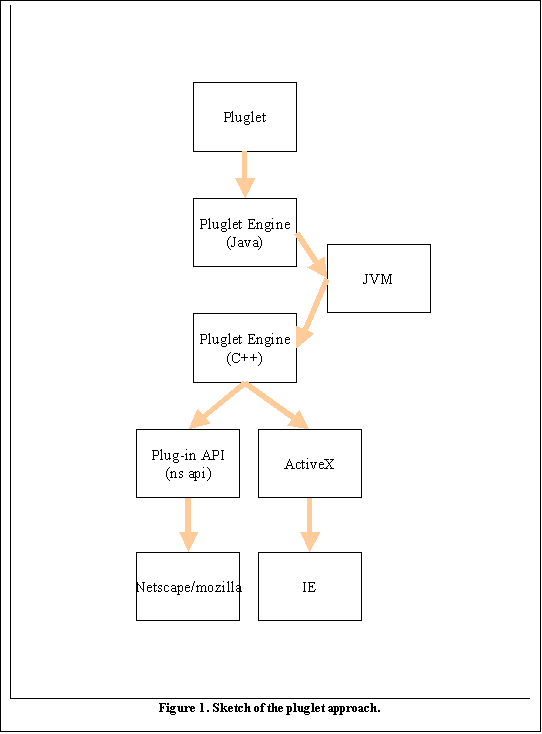

Peter Cao
Robert E. McGrath
National Center for Supercomputing Applications
University of Illinois, Urbana-Champaign
July, 2004
This paper discusses investigations of how to implement a Web browser plug-in that can browse Hierarchical Data Format (HDF) files.
The HDFView browser [1] and other tools provide stand-alone tools for accessing HDF files. The main goal of the HDF browser plug-in is to provide a similar ability to browse HDF using standard Web browsers. The plug-in would enable users to click-and-view HDF files remotely and locally from popular web browsers. Users do not have to install and reinstall a separate tool. The plug-in would be automatically updated when new release comes out.
We investigated current browser plug-in technology. This note summarizes the most promising technology. We conclude that there is no single solution that will work for all browsers and all platforms of interest. The best single option appears to be to work on IE and Windows. A plug-in for this browser would cover 85+% of computer users, although it may not be 85% of HDF users.
The purpose of this report is to seek direction of where we should go from here.
The NCSA HDF team provides a Java application, HDFview, that implements a graphical browse and editor, which works with HDF4, HDF5 and has optional plug-ins for HDF-EOS, FITS, and netCDF3 [1]. In other work, we investigated Client-Server approaches, include Java Remote Method Invocation, CORBA, and Web Services [2]. Similar products are available from third parties, such as the HDF Explorer browser [3] and the Intel Array Visualizer [4].
The purpose of this project is to attempt to provide similar services in a Web Browser. The idea would be to handle HDF similar to popular multimedia formats. Once installed in the browser, the user would be able to click on an HDF file, and automatically launch a browse window.
A second requirement is to reuse as much of the Java HDFView as possible. We do not want to duplicate the work that went into the HDFView, and we do not want to support two or more separate code bases. Ideally, the plug-in would wrap Java classes from the HDFView.
We have investigated current technology for implementing Web browser plug-ins, as well as similar services. We have limited the investigation to two major browsers, Microsoft Internet Explorer (IE) and Mozilla (including netscape, mozilla, firefox), and four platforms, Microsoft Windows, Linux, Apple MacOsX and Sun Microsystems Solaris. We would like to create a single plug-in for all these cases, ideally, using the HDFView code.
Our investigation showed that, at this time, plug-ins are browser specific and may be platform specific as well. There is no single implementation will fit into all the cases: it is not possible to create a single plug-in that will work for all the browsers and platforms listed. Furthermore, it is not clear that Java can be used in a Web browser plug-in, or that a combined Java and C implementation (such as the HDFView) could be plugged in to any Web browser.
In addition to Web browser plug-ins, several other technologies might provide a simple point-and-click browser for HDF. The following approaches are discussed below:
1. A browser plug-in, written in C++ (native binary for a given platform).
2. A Mozilla “pluglet”
3. A Java Applet
4. Java Web Start
5. Add web browsing to HDFView
Each of these approaches was investigated. We summarize the technology, advantages and disadvantages, and present our conclusions.
The conventional technology for providing Web Browser plug-ins is supported by C++ APIs for the browser. There are two sets of plug-in APIs, Netscape Plug-in APIs and Microsoft ActiveX controls. Since Microsoft has removed support for Netscape plug-ins from IE 5.5 SP 2 and beyond, plug-ins developed in ActiveX control will not work on Mozilla, and Mozilla does not support ActiveX controls. This means that it is not possible to create a single plug-in that works with IE and Mozilla, you must implement at least two different versions of the “plug” code: Active X for IE on Windows, and Mozilla for other browsers and platforms.
The following is a list of the pros and cons of using ActiveX control.
Pros:
a) The plug-in is all in native C/C++. It will have the best performance in speed and memory management when loading files and open dataset.
b) It is compiled into one module, for easy installation. No additional software required, so the package will be smaller.
c) It will work best for IE. Although other browsers like Mozilla will not display the plug-in, the plug-in will be launched as a standalone application from other browsers on Windows
d) MFC (Microsoft Foundation Classes) provides a rich set of GUI components. The HDF plug-in will use a lot of such GUI components. The implementation will be easy and quick.
Cons:
a) This plug-in will work only for IE and Windows.
b) This would be a completely different product from HDFView. We will have to support two products.
The ActiveX control is a good solution, because of the popularity of the IE browser. The two disadvantages are that it is limited to Windows and IE, and that it cannot reuse our existing Java code.
There is no plug-in package in the JDK because browser plug-ins is browser and platform dependent. In order to support a plug-in package, it would be necessary for Java has to implement the native APIs to bridge the browser and Java Virtual Machine. Such APIs do not exist in the core Java package and Sun has no intention to do so.
Mozilla’s Blackwood project has developed a set of Java APIs for plug-in called “pluglet” to fill the gap [5]. A Pluglet is a Plug-in that is written in the Java programming language. At the mozilla web site, it says “Writing a Plug-in in Java instantly makes it available on all platforms on which a Java Virtual Machine is available.”
Figure 1 illustrates how pluglets work. We would need to write a little code to use the “Pluglet” API (top box). The reset would be handled by the pluglet package. This approach appears to be ideal for our goals.
We downloaded the source, installed cygwin, and tried to compile it on Windows 2000. We also tried to install on Linux. The package is so complex and configuration is very confusing, and we could not make it compile.
We downloaded and installed the precompiled binaries. The package comes with examples to run sample pluglets within the Mozilla. None of the examples work, and inquiries to the Mozilla forum did not give answers.
Here is a summary of what we learned about the pluglet.
Pros:
a) It is 100% Java. It will work with Mozilla on all major platforms including Windows and Linux.
b) Pluglets may also work on IE as the pluglet project described although we couldn’t make that work.
c) We could reuse all the major components in the HDFView. Although we have two products, we basically maintain a single product.
Cons:
a) The biggest problem is that pluglets don’t seem to work, or atleast are difficult to make work. Pluglets do not seem to be a viable technology at this time.
b) It is uncertain whether pluglets will work with C libraries through Java Native Interface. This needs to be confirmed by experiment, and we don’t know at this point.
c) Installation
of the pluglet would complicated. There many individual pieces such as the JRE
dlls, JRE bins, pluglet jar files, pluglet Java Native Interface dlls, pluglet
native C++ dll, HDF Java plugin jar file and HDF Java Native Interface dlls.
These pieces have to put into different sub-directories under the Mozilla
browser directory. The path and classpath have to be set correctly. All this will require complex installation
scripts, which could be difficult to develop and maintain.The
performance might be a problem. Any actions on an HDF file such as open file or
dataset, it will go through the following steps: Native browser API (activeX or
NS plug-in APIs) à
pluglet C++ engine à JVM à pluglet Java engine à HDF plugin Java
components à
HDF Java Native Interface à HDF library, and all the way back to the browser
again.
Since we can’t get pluglets to work, it is impossible to determine whether
performance would be a practical issue.
d) Some
users may have security or other policy issues about using Java in IE. Pluglets
(or any Java extension) requires the JRE (Java Runtime Environment). Although
Java plug-in technology can automatically install the JRE, some browsers such
IE disable Java for security reasons.
Again, since we couldn’t get it to work, it is difficult ot assess these
problems.
e) Signing and registering a pluglet is very complicated.
Conclusions:
The pluglet technology is the right idea. Unfortunately, it does not seem to be working yet, and it is certainly not as solid as we would like for a real product.
If we discover how to make pluglets work, it would be a good idea to investigate them in more detail.
An applet is a program written in the Java programming language that can be included in an HTML page, much in the same way an image is included. When you use a Java-enabled browser to view a page that contains an applet, the applet's code is transferred to your system and executed by the browser's Java Virtual Machine (JVM). This technology might be used to provide a way to browse HDF files, at least from a Web server.
Here are the pros and cons of Java applet.
Pros:
a) With a little work, we probably could make the current HDFView into an applet, or make a version that would work as an applet.
b) We would have to maintain only one product. The HDFview will be both a standalone application and an applet
Cons:
a) The <applet> tag has to put into an html file in order to launch the applet. There is no way to launch the applet by file extension or MIME types. This does not meet the goal of a click-and-view for a local HDF file.
b) It is not clear that an applet can use the Java Native Interface (it probably can’t). This could mean that the HDFView must be split, with the data access on the server, and the GUI in the browser (e.g., see an earlier study [6].) This is definitely much more work, and does not meet the goals of this project.
c) Applets are downloaded at each invocation. The HDFView is a large package, it would probably be unacceptably slow to download it every time users hit a page. The alternative is to use a signed applet, which does not need to be downloaded every time.
Conclusions:
Java Applets do not meet the basic goal of this project. There are several technical issues that would need to be resolved, as well.
Java Web Start is a Java technology to deploy standalone Java software applications with a single click over the network [7]. When a user clicks a link in the browser, pointing to a special JNLP (Java Network Launching Protocol) executing file with a Java application, it launches Java Web Start, which in turn automatically downloads application files from Web server; the user caches some of them and launches the described Java application. In certain circumstances, we could use Java Web Start to launch the HDFView.
Here are the pros and cons for Java Web Start.
Pros:
a) No need to write new software
Cons:
a) Because Java Web Start's work is based on using the JNLP protocol, the configuration is carried on both the client and server sides. On the client side, is is necessary to configure Java Web Start (Application Manager) and Web browser to work together. On the server side, it is necessary to register JNLP file extension for the server to be able to launch the right application.
b) All application resources, such as images, configuration files, and libraries (DLL, SO) must be included into JAR files. It is not clear whether it is possible to load the HDF JNI from JAR file, it may well not be possible.
c) It is not clear that this meets the goals of this project.
Conclusions:
Web Start is an interesting technology for certain circumstances. It does not seem to meet the requirements for this project. There are some open technical questions.
In principle, we could add new features into the HDFView so that the HDFView will act like the Web browser, i.e., users can browse remote/local HTML and other files in the HDFView.
The HDFView could provide all the basic functions such as display HTML files and following links on a Web page. However, it would be difficult for the HDFView to implement all the advanced browsing features of Mozilla and IE. Users would have to install the HDFView and use it as their Web browser, which doesn’t seem to meet the goals of this project.
Pros:
a) We would maintain one software base, which is compatible with the Web and provides HDF viewing.
b) This would work for all currently supported platforms
Cons:
a) This does not meet the requirements of the project.
b) It is questionable whether users would use a different, less featureful Web browser.
1. HDF Java Information, http:ncsa.uiuc.edu/java-hdf-html.
2. “Experiments on JSP, XML, CORBA, and HDF,” http://hdf.ncsa.uiuc.edu/HDF5/XML/JSPExperiments/index.html
3. http://www.space-research.pt/
4. http://intel.com/software/products/ compilers/fwin/array_vis.htm
5. http://www.mozilla.org/projects/blackwood/java-plug-ins/
6. Kun Yan and Robert E. McGrath, "Experiments with JSP, XML, CORBA, and HDF" (August, 2002) http://hdf.ncsa.uiuc.edu/HDF5/XML/JSPExperiments/Java-JSP-CORBA-HDF5.pdf
7. http://java.sun.com/products/javawebstart/